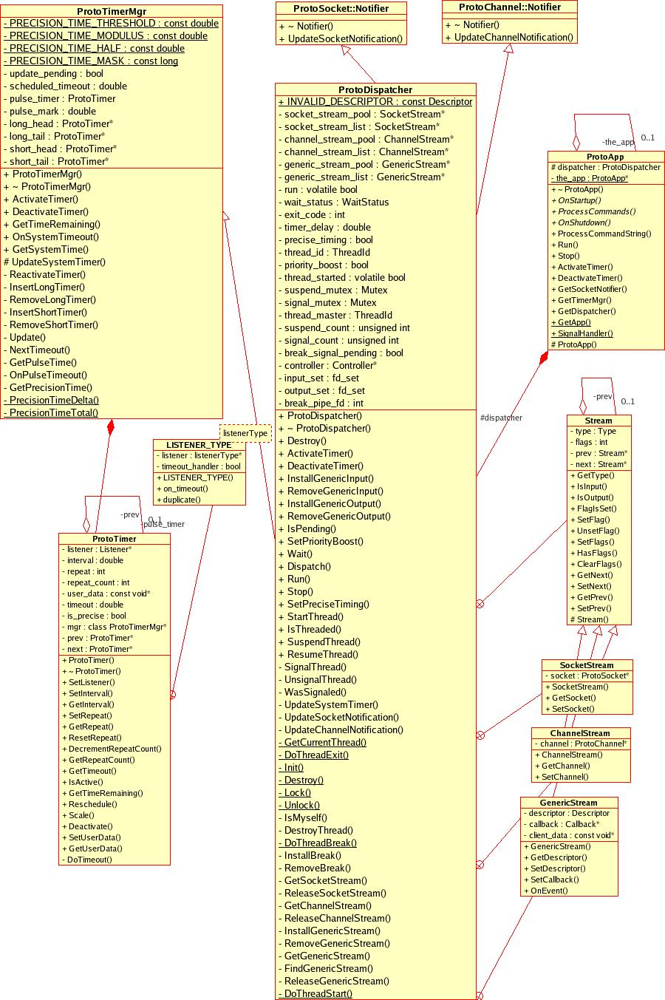
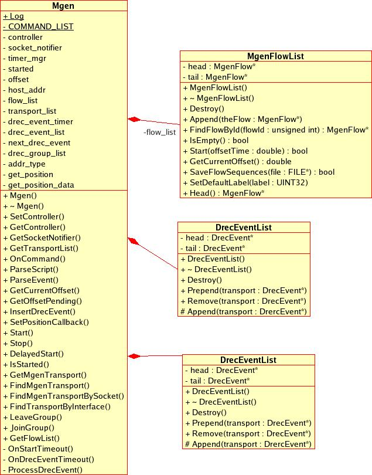
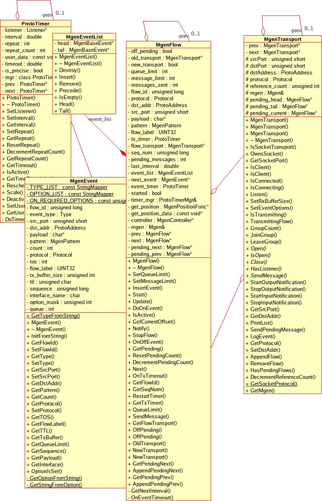
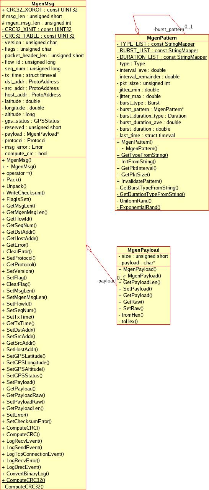
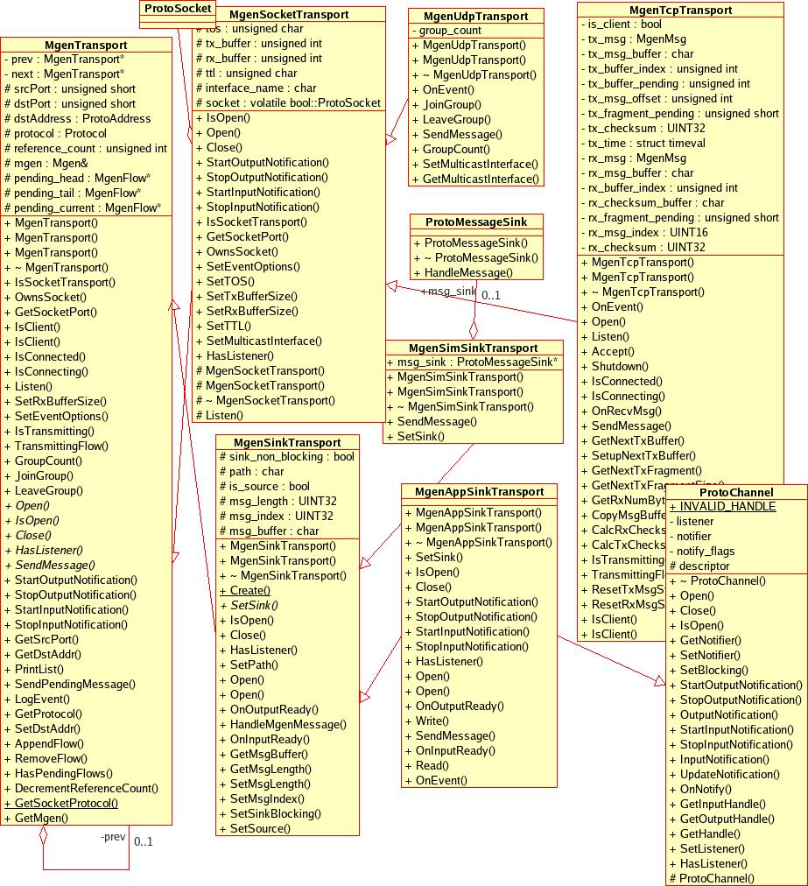
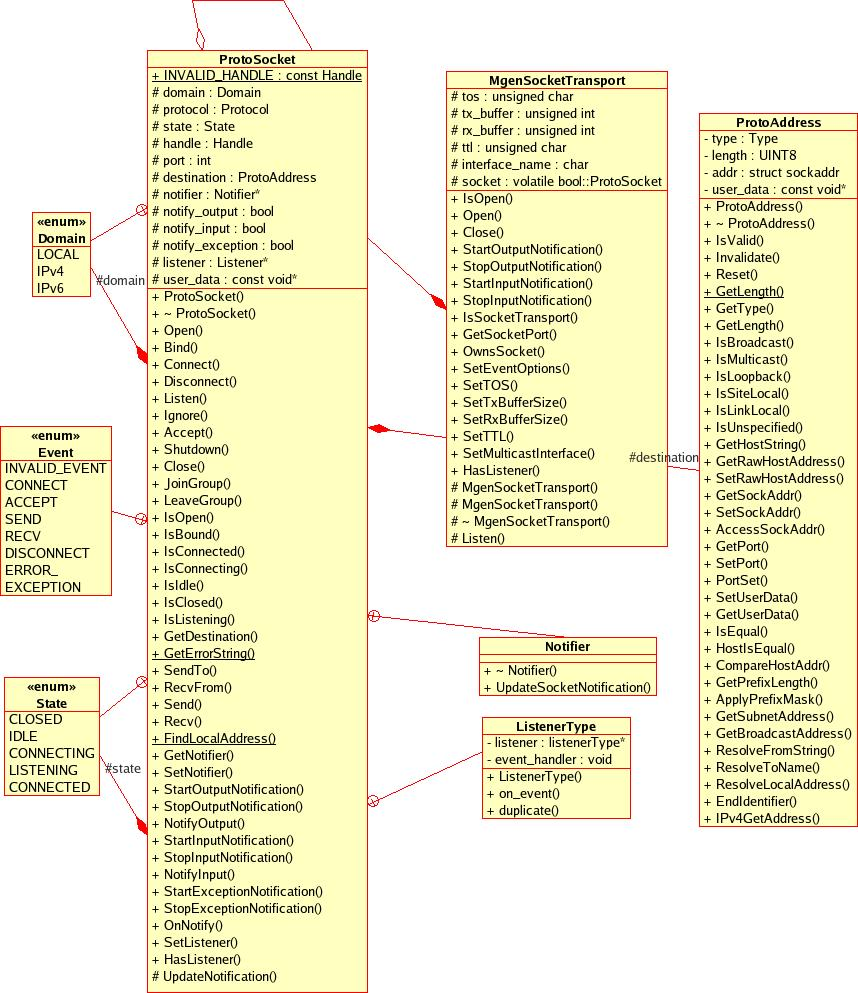
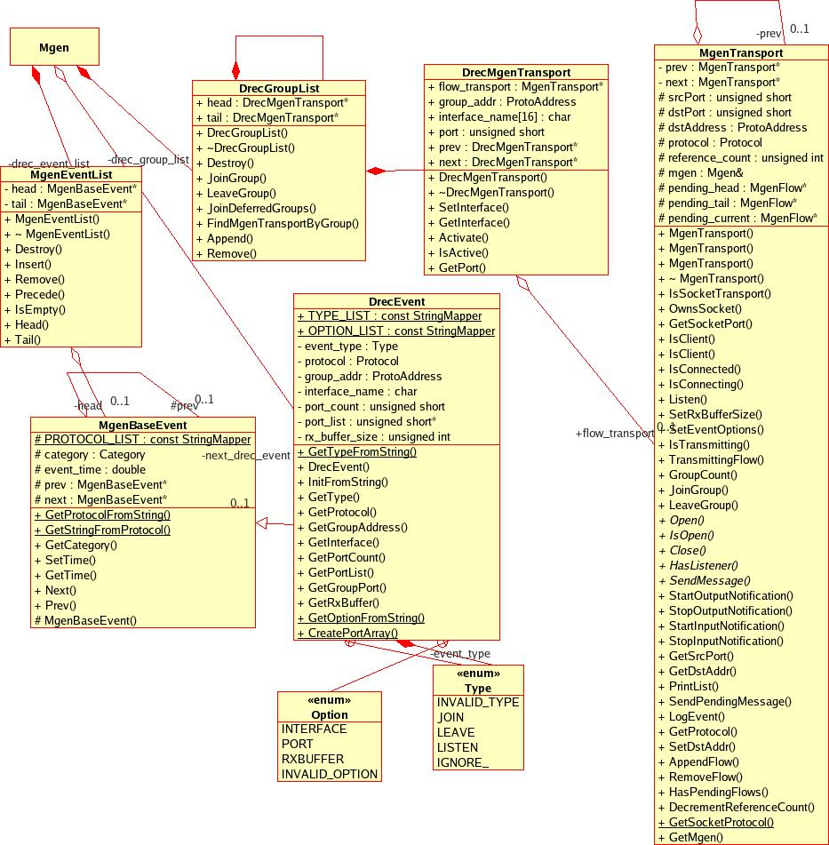

The Multi-Generator (MGEN) is open source software developed by the Naval Research Laboratory (NRL) PROTocol Engineering Advanced Networking (PROTEAN) Research Group. MGEN provides the ability to perform IP network performance tests and measurements using UDP/TCP IP traffic. It can also be used in network simulation environments like ns-2 and opnet.
The toolset generates real-time traffic patterns so that the network can be loaded in a variety of ways. The generated traffic can also be received and logged for analyses. Script files are used to drive the generated loading patterns over the course of time. These script files can be used to emulate the traffic patterns of unicast and/or multicast UDP and TCP IP applications. The tool set can be scripted to dynamically join and leave IP multicast groups. MGEN log data can be used to calculate performance statistics on throughput, packet loss rates, communication delay, and more. MGEN currently runs on various Unix-based (including MacOS X) and WIN32 platforms.
This document describes the implementation design of Version 5.0 of the MGEN application.
MGEN uses NRL's Protean Protocol Prototyping Library (Protolib), a cross-platform library that provides a set of simple C++ classes that allow development of network protocols and applications that can run on different platforms and in network simulation environments. The MGEN application is itself a Protolib application, and extends the toolkit by implementing traffic flow control and managing network and other traffic transmission and reception.
The MGEN code is organized in the following directory structure:
$ ls /home/nrl/mgen common/ mgen-docbook.html mgen.html protolib/ VERSION.TXT CVS/ mgen-docbook.pdf ns/ README.TXT win32/ example.mgn mgen-docbook.xml opnet/ unix/ wince/ $
All mgen specific .cpp and .h files are stored in the common directory, the entire protolib toolkit is under the protolib directory, and simulation/os specific .cpp and .h files are in their respective directories. The unix directory holds cross-platform makefiles and build instructions.
Upon system startup, the MgenApp object is instantiated and parses any command line options and loads any input file specified. As reception events are processed, dynamic reception events (drec_events) are added to a drec_event_list that will direct when IP listen/ignore join/leave commands will begin and end. Likewise, as transmission events are encountered, MgenFlow objects are instantiated that will manage when traffic to a given transmission source and destination pair will begin and end, as well as store flow state.
Next, the MgenApp starts the Mgen object, the top level state and controller of an Mgen instance. The Mgen object's "OnStartup()" method iterates through its list of FlowObjects and activates timers for any flows that are scheduled for immediate transmission. When a flow is activated, a transport object will be associated with the MgenFlow that will manage the physical transport interface, e.g. opening a UDP socket, waiting for a TCP connection. The descriptors associated with these transports will be added to a master list to be managed by the application's dispatcher that implements the applications "main loop". Likewise, timers are activated for any reception events in the drec event list that are scheduled to begin.
Finally, the MgenApp's "Run()" method is called. As can be seen in the class diagram, MgenApp is a subclass of Protolib's ProtoApp class, a base class for implementing Protolib-based command-line applications. The "Run()" method is implemented in the ProtoApp superclass which in turn invokes a ProtoDispatcher object's "Run()" method. The Protolib ProtoDispatcher class provides a core around which applications using Protolib can be implemented. It's "Run()" method provides a "main loop" which uses the "select()" system call on Unix and the similar "MsgWaitForMultipleObjectsEx()" system call on Win32 to evaluate descriptor readiness. This "main loop" also evaluates any timers set previously by Mgen's "OnStartup()" method that are scheduled to fire.
As the system "select()" call indicates resource readiness or the timer manager detects event readiness, system callbacks associated with the given resource/event are called to perform associated processing. The "main loop" continues in this manner until no more system activity is scheduled to take place (e.g. all reception events and transmission events have completed) at which point the system is shut down.

As mentioned in the overview, the "main loop" of the Mgen application is implemented by the ProtoDispatcher class. The dispatcher maintains socket and other I/O descriptor references in linked lists of Stream objects. The socket_stream_list is a linked list of SocketStreams that contain pointers to ProtoSockets, the ProtoLib container class for managing internet sockets. These are the same sockets associated with an MgenFlow's transport object. The channel_stream_list contains ChannelStreams that reference ProtoChannels, a protoLib base class for performing asynchronous I/O notification and event dispatch for non-socket based communication channels. They are the same channels associated with any flows using ProtoChannel transports (e.g. sink transports). The generic_stream_list contains GenericStreams, a lighter weight class that performs event dispatch for generic descriptors. The dispatcher's main loop continually iterates through these lists and calls the notification method of the "listening" object associated with the stream type (e.g. ProtoSocket::OnNotify for SocketStream's) as resource readiness is discovered.
The ProtoDispatcher is also a subclass of the ProtoTimerMgr class that maintains a linked list of all activated event timers (implemented in the ProtoTimer class). After the communication streams are evaluated, the dispatcher calls the ProtoTimerMgr's OnSystemTimeout() method to determine whether any active application timers have timed out according to the application timeline. If so, the "listener" associated with the ProtoTimer object is notified. The "listener" is generally the object that owns the timer, e.g. an MgenFlow.
In brief, the main loop pseudo-code is as follows:
int ProtoDispatcher::Run()
{
do
{
Wait(); // Wait for descriptor i/o event
Dispatch();
} while (run)
}
void ProtoDispatcher::Wait()
{
FD_ZERO(&input_set);
FD_ZERO(&output_set);
// Monitor socket streams ...
SocketStream* nextSocket = socket_stream_list;
while (nextSocket)
{
if (nextSocket->IsInput()) FD_SET(descriptor, &input_set);
if (nextSocket->IsOutput()) FD_SET(descriptor, &output_set);
nextSocket = (SocketStream*)nextSocket->GetNext();
}
// Monitor channel streams ...
ChannelStream* nextChannel = channel_stream_list;
while (nextChannel)
{
Descriptor descriptor = nextChannel->GetChannel().GetHandle();
if (nextChannel->IsInput()) FD_SET(descriptor, &input_set);
if (nextChannel->IsOutput()) FD_SET(descriptor, &output_set);
nextChannel = (ChannelStream*)nextChannel->GetNext();
}
wait_status = pselect(maxDescriptor+1,
(fd_set*)&input_set,
(fd_set*)&output_set,
(fd_set*) NULL,
timeoutPtr,
(sigset_t*)NULL);
} // end ProtoDispatcher::Wait()
void ProtoDispatcher::Dispatch()
{
switch (wait_status)
{
case -1:
break;
case 0:
// timeout only ?
OnSystemTimeout();
break;
default:
// Check socket streams ...
SocketStream* nextSocketStream = socket_stream_list;
while (nextSocketStream)
{
ProtoSocket& theSocket = nextSocketStream->GetSocket();
Descriptor descriptor = theSocket.GetHandle();
if (nextSocketStream->IsInput() && FD_ISSET(descriptor, &input_set))
{
theSocket.OnNotify(ProtoSocket::NOTIFY_INPUT);
//break;
}
if (nextSocketStream->IsOutput() && FD_ISSET(descriptor, &output_set))
{
theSocket.OnNotify(ProtoSocket::NOTIFY_OUTPUT);
//break;
}
nextSocketStream = savedNext;
}
// Check channel and generic streams... [snip]
break;
}
} // end ProtoDispatcher::Dispatch()
void ProtoTimerMgr::OnSystemTimeout()
{
scheduled_timeout = -1.0;
update_pending = true;
ProtoTimer* next = short_head;
double now = GetPrecisionTime();
while (next)
{
// This works within a microsecond of accuracy
if (PrecisionTimeDelta(next->timeout, now) < (double)1.0e-06)
{
if(next->DoTimeout()) <- call listeners timeout method
{
if (next->IsActive())
{
RemoveShortTimer(next);
int repeatCount = next->repeat_count;
if (repeatCount)
{
ReactivateTimer(next, now);
if (repeatCount > 0) repeatCount--;
next->repeat_count = repeatCount;
}
}
}
next = short_head;
}
else
{
next = NULL;
}
}
update_pending = false;
Update(); <- Get next timeout interval
} // ProtoTimerMgr::OnSystemTimeout()

The Mgen class is the driver of the application. (It may also be embedded into other applications or network simulation agents). It maintains the list of MgenFlows, a list of DrecEvents (dynamic reception events), a list of MgenTransports (the container class for transports), and a list of DrecGroups (multicast groups). It is responsible for parsing mgen input events and commands (creating MgenFlows as transmission events are encountered), maintaining default application state (note that not all attributes such as default state are included in the mgen object in the above class diagram), and managing log file access.
Upon startup, it iterates through the mgen flow list starting any MgenFlow's scheduled to start at application startup and performs any offset processing (the application can be started at seconds offset into the script time line and therefore events scheduled prior to offset time are processed to establish system state at the time of offset). Likewise it iterates through the drec_event_list, performing any "reception event" processing, e.g. listening to ports, joining multicast groups. As owner of the mgen transport list, it also implements functions to create/access transport objects.

The MgenFlowList is a linked list of MgenFlow objects created when the application parsed the input file of application events (or received run time events over the control channel). Each MgenFlow contains it's own event list that dictates when the traffic flow should start, stop, or be modified and an event_timer that schedules these mgen flow events.
When mgen flow ON events are scheduled, the MgenFlow's DoOnEvent() function asks the Mgen object to find or create an mgen transport appropriate to the protocol, src, and destination addresses specified in the event. Mgen flows with common src and destination attributes can share a common transport to create compound data flows. (Udp sockets with common source ports but differing destinations will also share a common transport.) The flow transport is then opened (if not already opened when the transport is being shared), and the transmission timer (tx_timer) is activated. (The tx_timer's "listener" is set to the flow's OnTxTimeout method in the MgenFlow's constructor.) The dispatcher will call this function as the tx_timer fires according to the transmission pattern specified for the MgenEvent.
As OnTxTimeout is called, the MgenFlow loads the MgenMessage content, packs the message into a transmission buffer, and asks its transport to send the message. Finally, the timer is reset to fire at an interval defined by the MgenFlow's transmission pattern.
As the event_timer triggers the firing of other flow events, the dispatcher calls MgenFlow::OnEventTimeout() (the event_timer's callback set in the MgenFlow's constructor) and the flow is modified (e.g. transmission rate changes) and shut down as directed.

The MgenMsg class is a helper class for building mgen messages and, in the case of TCP messages, maintaining mgen message state (e.g. flow id, sequence number, message length etc.). It has a logging facility for sent/received messages and errors and functions to compute message checksums. It may contain an MgenPayload class to store message payload. Mgen messages are transmitted according to the pattern defined in the MgenEvent's MgenPattern class associated with an MgenFlow.

MgenTransport is the base class for transport container classes. The transport classes manage the transmission of mgen messages over network sockets or pipes, to files, or to other system process (e.g. network emulation environments, another mgen process).
Internet socket based classes inherit from the MgenTransport::MgenSocketTransport subclass while sink classes (that can send data to files, devices, or to other applications) inherit from MgenTransport::MgenSinkTransport subclass.
The MgenSocketTransport class contains a pointer to a protolib ProtoSocket class, a container class that provides consistent interface for use of operating system (or simulation environment) transport sockets. The MgenUdpTransport and MgenTcpTransport subclasses extend this class.
The MgenAppSinkTransport class enables mgen to use the file or device (e.g. stdout) specified as a "sink" or destination for transmitting flows of protocol type "sink". I.e., Mgen message flows of type "sink" are written to the "sink" device instead of to a UDP/TCP socket. The MgenAppSinkTransport multiply inherits from the ProtoChannel class, which manages asynchronous I/O notification for the transport.
The MgenSimSinkTransport class is used for "sink" data in simulation environments. Its ProtoMessageSink class acts as a "middle man" class for generic message passing between simulation environments and an mgen engine.

The socket transport classes contain a ProtoSocket object, that is a protolib container class that provides a consistent interface for use of operating system (or simulation environment) transport sockets. The ProtoSocket class supports both the UDP and TCP protocols in Linux and Windows operating system environments. The protolib ProtoAddress storage class provides support for IPv4 and IPv6 addressing.
The MgenSocketTransport class extends the functionality of the ProtoSocket by implementing additional transport controls, while the UDP and TCP subclasses override or implement additional functions specific to the protocol. For example, MgenTcpTransport::Open() extends the MgenSocketTransport::Open by calling ProtoSocket::Connect() when the transport is a TCP client. Note that "socket" is a protolib ProtoSocket in the following code sample:
bool MgenTcpTransport::Open(ProtoAddress::Type addrType, bool bindOnOpen)
{
if (socket.IsConnecting() || socket.IsConnected())
{
reference_count++;
return true; // attempt to open socket made already by another flow ...
}
if (MgenSocketTransport::Open(addrType,bindOnOpen))
{
if (IsClient())
{
if (!socket.Connect(dstAddress))
{
DMSG(0,"MgenTcpTransport::Open() Error: Failed to connect tcp socket.\n");
return false;
}
return true;
}
return true;
}
DMSG(0,"MgenTcpTransport::Open() Error: Failed to open tcp socket.\n");
return false;
}
bool MgenSocketTransport::Open(ProtoAddress::Type addrType, bool bindOnOpen)
{
if (socket.IsOpen())
{
if (socket.GetAddressType() != addrType)
DMSG(0, "MgenTransport::Open() Warning: socket address type mismatch\n");
if (bindOnOpen && !socket.IsBound())
{
if (!socket.Bind(srcPort))
{
DMSG(0, "MgenTransport::Open() socket bind error\n");
return false;
}
}
}
else if (!socket.Open(srcPort, addrType, bindOnOpen))
{
socket.SetLoopback(false); // by default
DMSG(0, "MgenTransport::Open() Error: socket open error\n");
return false;
}
// Reset src port in case it was os generated
srcPort = GetSocketPort();
if (tx_buffer)
socket.SetTxBufferSize(tx_buffer);
if (rx_buffer)
socket.SetRxBufferSize(rx_buffer);
if (tos)
socket.SetTOS(tos);
if (ttl)
socket.SetTTL(ttl);
if ('\0' != interface_name[0])
socket.SetMulticastInterface(interface_name);
reference_count++;
return true;
} // end MgenSocketTransport::Open()
The MgenTcpTransport also implements MgenTcpTransport::Listen() to direct the socket to listen for incoming TCP client connections when the transport is configured to be a TCP server, e.g.
# MGEN input script 0.0 TCP LISTEN 5000
Note that MgenUdpTransport implements UDP unicast and multicast packet transmission only. UDP reception events (e.g. UDP LISTEN, multicast JOIN) are implemented by the DrecMgenTransport object discussed below.
Another notable difference between the UDP and TCP subclasses is related to the protocols' message delivery characteristics. As UDP is an unreliable protocol, and messages are considered by mgen to be successfully transmitted as soon as the socket sends the packet, UDP messages are limited to UDP's maximum transmission unit of 8192.
The TCP protocol will guarantee message delivery however, and so mgen relies on TCP itself to monitor successful transmission of messages and therefore must maintain message state until the lower layer protocol indicates a message has been completely sent. Also, mgen allows mgen TCP messages to be of unlimited size, and therefore may break large TCP messages into mgen message "fragments" of a maximum size of 65535 (TCP's maximum segment size). Each TCP message fragment will contain an mgen message header with the associated mgen message sequence number. The MgenTcpTransport therefore maintains more message state than the other subclasses and message transmission is more complex.

The UDP unicast and multicast reception events are managed by the DrecMgenTransport class. When a drec event timer fires, the system callback Mgen::OnDrecEventTimeout will pass the event to Mgen::ProcessDrecEvent() that will take action (either JOIN or LEAVE a multicast group or LISTEN to or IGNORE a UDP port) as specified by the DrecEvent event type. Like MgenFlows, DrecMgenTransport's keep a pointer to an MgenTransport, the container class for mgen transports. Drec transports are UDP based, and the associated MgenUdpTransport has a pointer to a ProtoSocket that ultimately interfaces with the system socket.
As mentioned earlier, multiple flows can be associated with a single transport. When a transport is experiencing congestion and queuing is enabled for the flow (via the QUEUE attribute), flows that are not able to send scheduled mgen messages are added to a linked list of pending flows that is maintained by the transport and output notification will be enabled for the transport. Enabling output notification will cause the dispatcher to notify the ProtoSocket's listener (the transport that owns the ProtoSocket under congestion) when the transport is no longer congested.
When this occurs, the transport will iterate through it's list of pending flows in a round robin fashion and send any pending messages until the backlog is cleared or the transport experiences further congestion. Flow's that have no more pending messages will be removed from the pending queue list.
When the queue limit for a flow is reached, the transmission timer for the flow will be temporarily deactivated and no more pending messages will be accumulated for the flow. The timer will be reactivated when the number of pending messages for the flow is again below the queue limit, and message transmission/accumulation for the flow will return to the previously scheduled rate of transmission as defined by the mgen flow pattern.
If no global command or flow specific QUEUE attribute is specified, a default <queueSize> of "0" will be in effect which will result in no queuing behavior, e.g. the transmission timer will continue to fire at its regularly scheduled interval regardless of transport congestion. No pending message count will be accumulated and message transmission will succeed or fail depending on transport availability.
A <queueSize> threshold of "-1" sets an unlimited queue size. This means that a congested flow's transmission timer will continue to fire (thereby building up it's pending message count), but any pending messages will be sent as quickly as possible until congestion clears.
Any pending messages for a flow will be sent before the flow will be shutdown by a scheduled OFF event. Likewise, the pending message queue for a flow that is being restarted will be cleared. Note however, if any of the content of the mgen message header is changed (src or dst addresses, etc.) the pending message count will be reset. All other flow attribute changes (rate, message size, payload content, ttl, etc.) will be effected immediately, including any pending messages.
Relevent pseudo code implementing the above is as follows:
// Receive and log a UDP packet <- the callback for a udp socket descriptor
void MgenUdpTransport::OnEvent(ProtoSocket& theSocket, ProtoSocket::Event theEvent)
{
switch (theEvent)
{
case ProtoSocket::RECV:
{
while (theSocket.RecvFrom(buffer, len, srcAddr))
{
// log the packet
[snip]
}
break;
}
case ProtoSocket::SEND:
{
SendPendingMessage();
break;
}
default:
DMSG(0, "MgenUdpTransport::OnEvent() unexpected event type\n");
break;
}
} // end MgenUdpTransport::OnEvent()
bool MgenTransport::SendPendingMessage()
{
// Send pending messages until we hit congestion
// or clear the queue...
while (!IsTransmitting() && pending_current)
{
if (pending_current->GetPending() > 0)
if (!pending_current->SendMessage())
return false;
else
pending_current->DecrementPendingCount();
// Restart timer if we're below the queue limit
if ((pending_current->QueueLimit() > 0 &&
(pending_current->GetPending() <
pending_current->QueueLimit()))
{
pending_current->RestartTimer();
}
if (!pending_current->GetPending())
{
// If we've sent all pending messages,
// remove flow from pending list.
[snip]
continue;
}
// cycle back to head of queue if we
// reached the end.
if (!pending_current && pending_head)
pending_current = pending_head;
}
// Resume normal operations
if (!IsTransmitting() && !HasPendingFlows())
{
StopOutputNotification();
}
return true;
} // end MgenTransport::SendPendingMessage()